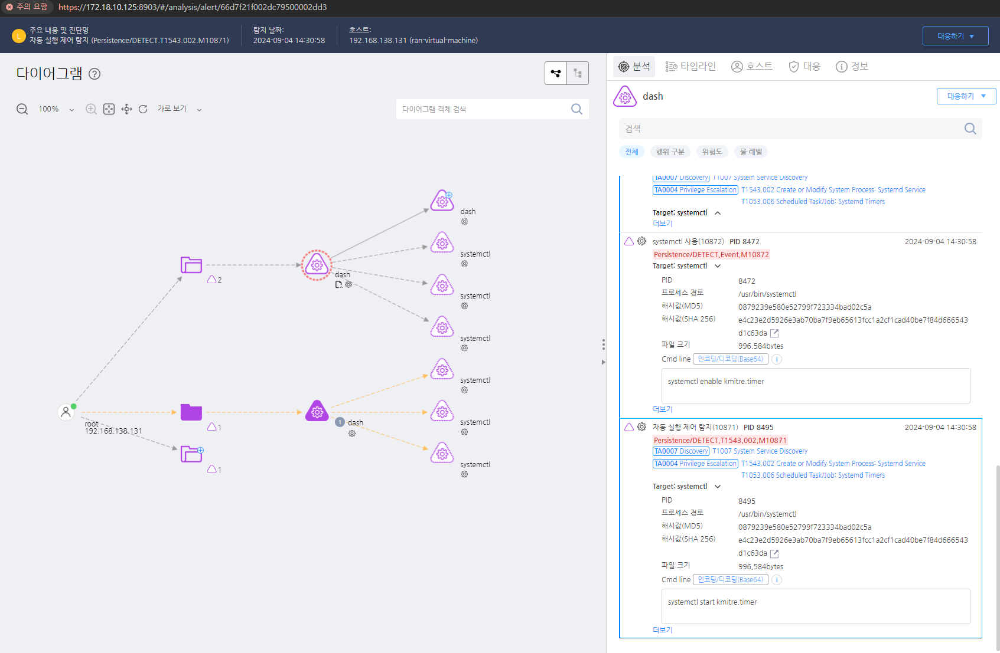
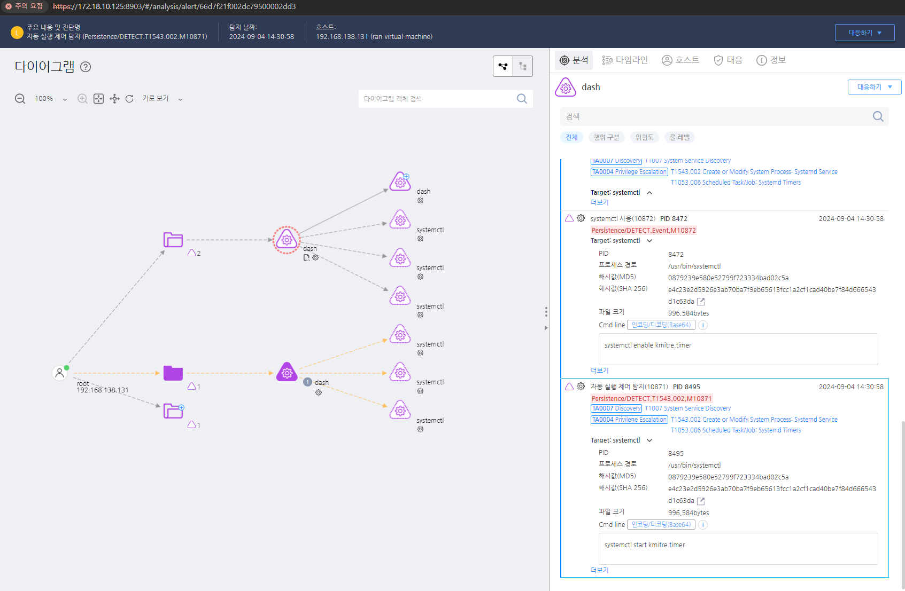
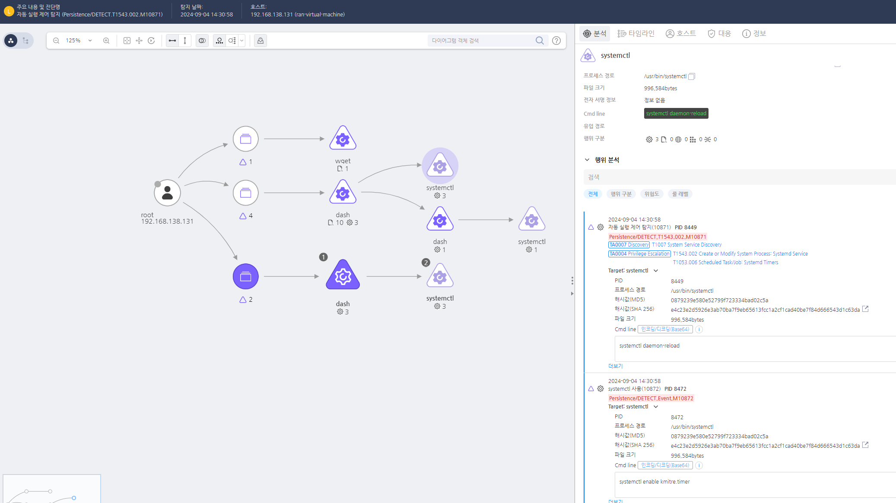
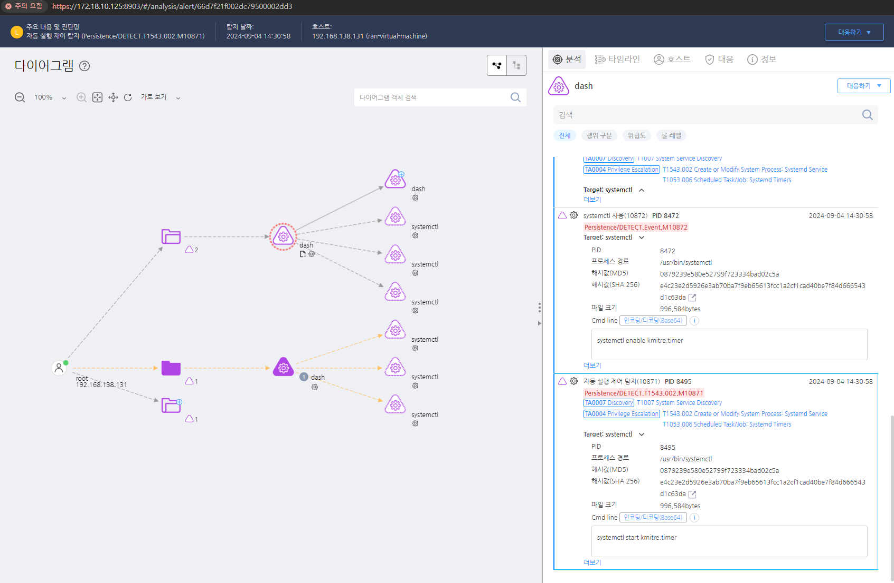

MITRE ATT&CK 액션을 기준으로 대응 방안을 작성
systemctl 프로세스 실행을 탐지한다.


systemctl list-timers 명령어를 사용하여 타이머 목록을 검토하고, 의심스러운 타이머를 조사하여 제거합니다.
Systemd Timer 설정 및 접근 제한 (M1026 - Privileged Account Management)
*.timer 파일) 및 서비스(*.service 파일)를 생성·수정하지 못하도록 권한 설정 /etc/systemd/system/ 및 ~/.config/systemd/user/ 디렉터리에 대한 쓰기 권한을 루트 사용자 및 신뢰된 계정으로 제한 systemctl 명령어를 관리자(root)만 실행할 수 있도록 제한 비인가된 타이머 및 서비스 차단 (M1042 - Disable or Remove Feature or Program)
systemctl disable <timer_name>) systemctl list-timers --all 명령을 주기적으로 실행하여 의심스러운 타이머 확인 및 삭제 .timer) 및 관련 서비스 파일(.service)을 검토하여 정상적인 시스템 서비스와 비교 파일 무결성 검사 및 변경 감지 (M1047 - System Logging & Monitoring)
/etc/systemd/system/, /lib/systemd/system/ 디렉터리 모니터링 /var/log/syslog 및 /var/log/audit/audit.log에서 비정상적인 systemd 실행 및 변경 내역 모니터링 비정상적인 systemd 타이머 실행 탐지 (M1040 - Behavior-Based Detection)
systemctl list-timers --all 및 journalctl -u <timer_name> 명령을 정기적으로 실행하여 의심스러운 타이머 확인 관리자 계정 및 권한 최소화 (M1018 - User Account Management)
systemctl 사용을 제한하고, root 계정이 아닌 경우 실행 불가하도록 설정 스크립트 실행 제한 및 화이트리스트 적용 (M1038 - Execution Prevention)
ExecStart, ExecStartPre, ExecStartPost 항목에서 비정상적인 실행 파일 및 명령 탐지 Action 실행시 함꼐 영향을 받는 다른 Techniqes
| ATT&CK |
|---|
| T1053.006 |
| D3FEND |
|---|
| D3-SJA Scheduled Job Analysis |